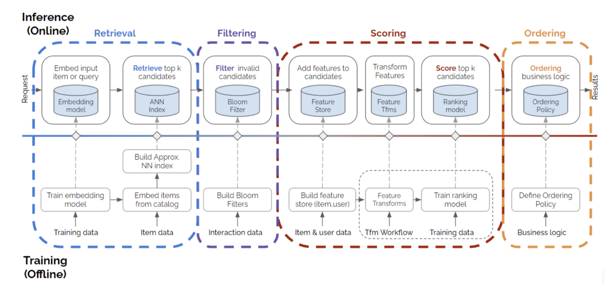

[1]:
# Copyright 2021 NVIDIA Corporation. All Rights Reserved.
#
# Licensed under the Apache License, Version 2.0 (the "License");
# you may not use this file except in compliance with the License.
# You may obtain a copy of the License at
#
# http://www.apache.org/licenses/LICENSE-2.0
#
# Unless required by applicable law or agreed to in writing, software
# distributed under the License is distributed on an "AS IS" BASIS,
# WITHOUT WARRANTIES OR CONDITIONS OF ANY KIND, either express or implied.
# See the License for the specific language governing permissions and
# limitations under the License.
# ================================

Building Intelligent Recommender Systems with Merlin
Overview
Recommender Systems (RecSys) are the engine of the modern internet and the catalyst for human decisions. Building a recommendation system is challenging because it requires multiple stages (data preprocessing, offline training, item retrieval, filtering, ranking, ordering, etc.) to work together seamlessly and efficiently. The biggest challenges for new practitioners are the lack of understanding around what RecSys look like in the real world, and the gap between examples of simple models and a production-ready end-to-end recommender systems.
The figure below represents a four-stage recommender systems. This is more complex process than only training a single model and deploying it, and it is much more realistic and closer to what’s happening in the real-world recommender production systems.

In these series of notebooks, we are going to showcase how we can deploy a four-stage recommender systems using Merlin Systems library easily on Triton Inference Server. Let’s go over the concepts in the figure briefly. - Retrieval: This is the step to narrow down millions of items into thounds of candidates. We are going to train a Two-Tower item retrieval model to retrive the relevant top-K candidate items. - Filtering: This step is to exclude the already interacted or undesirable items from the candidate items set or to apply business logic rules. Although this is an important step, for this example we skip this step. - Scoring: This is also known as ranking. Here the retrieved and filtered candidate items are being scored. We are going to train a ranking model to be able to use at our scoring step. - Ordering: At this stage, we can order the final set of items that we want to recommend to the user. Here, we’re able to align the output of the model with business needs, constraints, or criteria.
To learn more about the four-stage recommender systems, you can listen to Even Oldridge’s Moving Beyond Recommender Models talk at KDD’21 and read more in this blog post.
Learning objectives
Understanding four stages of recommender systems
Training retrieval and ranking models with Merlin Models
Setting up feature store and approximate nearest neighbours (ANN) search libraries
Deploying trained models to Triton Inference Server with Merlin Systems
In additon to NVIDIA Merlin libraries and Triton library, we are using two external libraries in these series of examples:
Feast: an end-to-end open source feature store library for machine learning
Faiss: a library for efficient similarity search and clustering of dense vectors
You can find more information about Feast feature store and Faiss libraries in the next notebook. Please follow the instructions in the README.md file to install these libraries.
Import required libraries and functions
Compatibility:
These notebooks are developed and tested using our latest inference container on NVIDIA’s docker registry.
[2]:
%pip install tensorflow "feast<0.20" faiss-gpu
[3]:
import os
os.environ["TF_GPU_ALLOCATOR"]="cuda_malloc_async"
import cudf
import glob
import gc
import nvtabular as nvt
from nvtabular.ops import *
from merlin.models.utils.example_utils import workflow_fit_transform
from merlin.schema.tags import Tags
import merlin.models.tf as mm
from merlin.io.dataset import Dataset
import tensorflow as tf
2022-04-26 19:18:30.785739: I tensorflow/core/platform/cpu_feature_guard.cc:151] This TensorFlow binary is optimized with oneAPI Deep Neural Network Library (oneDNN) to use the following CPU instructions in performance-critical operations: AVX2 AVX512F FMA
To enable them in other operations, rebuild TensorFlow with the appropriate compiler flags.
2022-04-26 19:18:31.885961: I tensorflow/core/common_runtime/gpu/gpu_process_state.cc:214] Using CUDA malloc Async allocator for GPU: 0
2022-04-26 19:18:31.886097: I tensorflow/core/common_runtime/gpu/gpu_device.cc:1525] Created device /job:localhost/replica:0/task:0/device:GPU:0 with 16254 MB memory: -> device: 0, name: Quadro GV100, pci bus id: 0000:15:00.0, compute capability: 7.0
[4]:
# disable INFO and DEBUG logging everywhere
import logging
logging.disable(logging.WARNING)
In this example notebook, we will generate the synthetic train and test datasets mimicking the real Ali-CCP: Alibaba Click and Conversion Prediction dataset to build our recommender system models.
First, we define our input and output paths.
[5]:
DATA_FOLDER = os.environ.get("DATA_FOLDER", "/workspace/data/")
output_path = os.path.join(DATA_FOLDER, 'processed/ranking')
Then, we use generate_data utility function to generate synthetic dataset.
[6]:
from merlin.datasets.synthetic import generate_data
train = generate_data("aliccp-raw", 10000000)
valid = generate_data("aliccp-raw", 100000)
If you would like to use the real ALI-CCP dataset, you can use get_aliccp() function instead. This function takes the raw csv files, and generate parquet files that can be directly fed to NVTabular workflow above.
Feature Engineering with NVTabular
We are going to process our raw categorical features by encoding them using Categorify() operator and tag the features with user or item tags in the schema file. To learn more about NVTabular and the schema object visit this example notebook in the Merlin Models repo.
[7]:
%%time
user_id = ["user_id"] >> Categorify(dtype='int32') >> TagAsUserID()
item_id = ["item_id"] >> Categorify(dtype='int32') >> TagAsItemID()
item_features = ["item_category", "item_shop", "item_brand"] >> Categorify(dtype='int32') >> TagAsItemFeatures()
user_features = ['user_shops', 'user_profile', 'user_group',
'user_gender', 'user_age', 'user_consumption_2', 'user_is_occupied',
'user_geography', 'user_intentions', 'user_brands', 'user_categories'] \
>> Categorify(dtype='int32') >> TagAsUserFeatures()
targets = ["click"] >> AddMetadata(tags=[Tags.BINARY_CLASSIFICATION, "target"])
outputs = user_id+item_id+item_features+user_features+targets
CPU times: user 172 µs, sys: 29 µs, total: 201 µs
Wall time: 204 µs
Let’s call transform_aliccp utility function to be able to perform fit and transform steps on the raw dataset applying the operators defined in the NVTabular workflow pipeline below, and also save our workflow model. After fit and transform, the processed parquet files are saved to output_path.
[8]:
from merlin.datasets.ecommerce import transform_aliccp
transform_aliccp((train, valid), output_path, nvt_workflow=outputs, workflow_name='workflow_ranking')
/usr/lib/python3.8/site-packages/cudf/core/dataframe.py:1292: UserWarning: The deep parameter is ignored and is only included for pandas compatibility.
warnings.warn(
Training a Ranking Model with DLRM
NVTabular exported the schema file, schema.pbtxt a protobuf text file, of our processed dataset. To learn more about the schema object and schema file you can explore 02-Merlin-Models-and-NVTabular-integration.ipynb notebook.
We use the schema object to define our model.
[9]:
# define train and valid dataset objects
train = Dataset(os.path.join(output_path, 'train', '*.parquet'), part_size="500MB")
valid = Dataset(os.path.join(output_path, 'valid', '*.parquet'), part_size="500MB")
# define schema object
schema = train.schema
[10]:
target_column = schema.select_by_tag(Tags.TARGET).column_names[0]
target_column
[10]:
'click'
Deep Learning Recommendation Model (DLRM) architecture is a popular neural network model originally proposed by Facebook in 2019. The model was introduced as a personalization deep learning model that uses embeddings to process sparse features that represent categorical data and a multilayer perceptron (MLP) to process dense features, then interacts these features explicitly using the statistical techniques proposed in
here. To learn more about DLRM architetcture please visit Exploring-different-models notebook in the Merlin Models GH repo.
[11]:
model = mm.DLRMModel(
schema,
embedding_dim=64,
bottom_block=mm.MLPBlock([128, 64]),
top_block=mm.MLPBlock([128, 64, 32]),
prediction_tasks=mm.BinaryClassificationTask(target_column, metrics=[tf.keras.metrics.AUC()])
)
[12]:
model.compile(optimizer='adam', run_eagerly=False)
model.fit(train, validation_data=valid, batch_size=16*1024)
2022-04-26 19:18:47.296000: W tensorflow/python/util/util.cc:368] Sets are not currently considered sequences, but this may change in the future, so consider avoiding using them.
610/611 [============================>.] - ETA: 0s - auc: 0.4999 - loss: 0.6932 - regularization_loss: 0.0000e+00 - total_loss: 0.6932
2022-04-26 19:19:38.592641: W tensorflow/core/grappler/optimizers/loop_optimizer.cc:907] Skipping loop optimization for Merge node with control input: cond/branch_executed/_13
611/611 [==============================] - 50s 38ms/step - auc: 0.4999 - loss: 0.6932 - regularization_loss: 0.0000e+00 - total_loss: 0.6932 - val_auc: 0.5000 - val_loss: 0.6932 - val_regularization_loss: 0.0000e+00 - val_total_loss: 0.6932
[12]:
<keras.callbacks.History at 0x7fcefc04f730>
Let’s save our DLRM model to be able to load back at the deployment stage.
[13]:
model.save('dlrm')
Training a Retrieval Model with Two-Tower Model
Now we move to the offline retrieval stage. We are going to train a Two-Tower model for item retrieval. To learn more about the Two-tower model you can visit 05-Retrieval-Model.ipynb.
[14]:
output_path = os.path.join(DATA_FOLDER, 'processed/retrieval')
We select only positive interaction rows where click==1 in the dataset with Filter() operator.
[15]:
user_id = ["user_id"] >> Categorify(dtype='int32') >> TagAsUserID()
item_id = ["item_id"] >> Categorify(dtype='int32') >> TagAsItemID()
item_features = ["item_category", "item_shop", "item_brand"] >> Categorify(dtype='int32') >> TagAsItemFeatures()
user_features = ['user_shops', 'user_profile', 'user_group',
'user_gender', 'user_age', 'user_consumption_2', 'user_is_occupied',
'user_geography', 'user_intentions', 'user_brands', 'user_categories'] \
>> Categorify(dtype='int32') >> TagAsUserFeatures()
inputs = user_id + item_id + item_features + user_features + ['click']
outputs = inputs >> Filter(f=lambda df: df["click"] == 1)
transform_aliccp((train, valid), output_path, nvt_workflow=outputs, workflow_name='workflow_retrieval')
/usr/lib/python3.8/site-packages/cudf/core/dataframe.py:1292: UserWarning: The deep parameter is ignored and is only included for pandas compatibility.
warnings.warn(
[16]:
train_tt = Dataset(os.path.join(output_path, 'train', '*.parquet'))
valid_tt = Dataset(os.path.join(output_path, 'valid', '*.parquet'))
schema = train_tt.schema
schema = schema.select_by_tag([Tags.ITEM_ID, Tags.USER_ID, Tags.ITEM, Tags.USER])
[17]:
model = mm.TwoTowerModel(
schema,
query_tower=mm.MLPBlock([128, 64], no_activation_last_layer=True),
loss="categorical_crossentropy",
samplers=[mm.InBatchSampler()],
embedding_options = mm.EmbeddingOptions(infer_embedding_sizes=True),
metrics=[mm.RecallAt(10), mm.NDCGAt(10)]
)
[18]:
model.compile(optimizer='adam', run_eagerly=False)
model.fit(train_tt, validation_data=valid_tt, batch_size=1024*8, epochs=1)
610/611 [============================>.] - ETA: 0s - recall_at_10: 0.0344 - ndcg_10: 0.0334 - loss: 8.6966 - regularization_loss: 0.0000e+00 - total_loss: 8.6966
2022-04-26 19:20:33.534489: W tensorflow/core/grappler/optimizers/loop_optimizer.cc:907] Skipping loop optimization for Merge node with control input: cond/branch_executed/_24
611/611 [==============================] - 43s 61ms/step - recall_at_10: 0.0344 - ndcg_10: 0.0334 - loss: 8.6942 - regularization_loss: 0.0000e+00 - total_loss: 8.6942 - val_recall_at_10: 0.0345 - val_ndcg_10: 0.0342 - val_loss: 6.4634 - val_regularization_loss: 0.0000e+00 - val_total_loss: 6.4634
[18]:
<keras.callbacks.History at 0x7fcea166eb50>
In the following cells we are going to export the required user and item features files, and save the query (user) tower model and item embeddings to disk. If you want to read more about exporting retrieval models, please visit 05-Retrieval-Model.ipynb notebook in Merlin Models library repo.
Set up a feature store with Feast
Before we move onto the next step, we need to create a Feast feature repository.
[19]:
# set up the base dir to for feature store
BASE_DIR = os.environ.get("BASE_DIR", "/Merlin/examples/Deploying-multi-stage-RecSys/")
This will create the feature repo in the current working directory, which is BASE_DIR for us.
[20]:
!feast init feature_repo
Creating a new Feast repository in /Merlin/examples/Deploying-multi-stage-RecSys/feature_repo.
You should be seeing a message like Creating a new Feast repository in … printed out above. Now, navigate to the feature_repo folder and remove the demo parquet file created by default, and examples.py file.
[21]:
os.remove(os.path.join(BASE_DIR, 'feature_repo', 'example.py'))
os.remove(os.path.join(BASE_DIR, 'feature_repo/data', 'driver_stats.parquet'))
Exporting query (user) model
[22]:
query_tower = model.retrieval_block.query_block()
query_tower.save('query_tower')
Exporting user and item features
[23]:
from merlin.models.utils.dataset import unique_rows_by_features
user_features = unique_rows_by_features(train, Tags.USER, Tags.USER_ID).compute().reset_index(drop=True)
[24]:
user_features.head()
[24]:
| user_id | user_shops | user_profile | user_group | user_gender | user_age | user_consumption_2 | user_is_occupied | user_geography | user_intentions | user_brands | user_categories | |
|---|---|---|---|---|---|---|---|---|---|---|---|---|
| 0 | 1 | 1 | 1 | 1 | 1 | 1 | 1 | 1 | 1 | 1 | 1 | 1 |
| 1 | 2 | 2 | 1 | 1 | 1 | 1 | 1 | 1 | 1 | 2 | 2 | 2 |
| 2 | 3 | 3 | 1 | 1 | 1 | 1 | 1 | 1 | 1 | 3 | 3 | 3 |
| 3 | 4 | 4 | 1 | 1 | 1 | 1 | 1 | 1 | 1 | 4 | 4 | 4 |
| 4 | 5 | 5 | 1 | 1 | 1 | 1 | 1 | 1 | 1 | 5 | 5 | 5 |
We will artificially add datetime and created timestamp columns to our user_features dataframe. This required by Feast to track the user-item features and their creation time and to determine which version to use when we query Feast.
[25]:
from datetime import datetime
user_features["datetime"] = datetime.now()
user_features["datetime"] = user_features["datetime"].astype("datetime64[ns]")
user_features["created"] = datetime.now()
user_features["created"] = user_features["created"].astype("datetime64[ns]")
[26]:
user_features.head()
[26]:
| user_id | user_shops | user_profile | user_group | user_gender | user_age | user_consumption_2 | user_is_occupied | user_geography | user_intentions | user_brands | user_categories | datetime | created | |
|---|---|---|---|---|---|---|---|---|---|---|---|---|---|---|
| 0 | 1 | 1 | 1 | 1 | 1 | 1 | 1 | 1 | 1 | 1 | 1 | 1 | 2022-04-26 19:20:41.830940 | 2022-04-26 19:20:42.199991 |
| 1 | 2 | 2 | 1 | 1 | 1 | 1 | 1 | 1 | 1 | 2 | 2 | 2 | 2022-04-26 19:20:41.830940 | 2022-04-26 19:20:42.199991 |
| 2 | 3 | 3 | 1 | 1 | 1 | 1 | 1 | 1 | 1 | 3 | 3 | 3 | 2022-04-26 19:20:41.830940 | 2022-04-26 19:20:42.199991 |
| 3 | 4 | 4 | 1 | 1 | 1 | 1 | 1 | 1 | 1 | 4 | 4 | 4 | 2022-04-26 19:20:41.830940 | 2022-04-26 19:20:42.199991 |
| 4 | 5 | 5 | 1 | 1 | 1 | 1 | 1 | 1 | 1 | 5 | 5 | 5 | 2022-04-26 19:20:41.830940 | 2022-04-26 19:20:42.199991 |
[27]:
user_features.to_parquet(os.path.join(BASE_DIR, 'feature_repo/data', 'user_features.parquet'))
[28]:
item_features = unique_rows_by_features(train, Tags.ITEM, Tags.ITEM_ID).compute().reset_index(drop=True)
[29]:
item_features.shape
[29]:
(1331, 4)
[30]:
item_features["datetime"] = datetime.now()
item_features["datetime"] = item_features["datetime"].astype("datetime64[ns]")
item_features["created"] = datetime.now()
item_features["created"] = item_features["created"].astype("datetime64[ns]")
[31]:
item_features.head()
[31]:
| item_id | item_category | item_shop | item_brand | datetime | created | |
|---|---|---|---|---|---|---|
| 0 | 1 | 1 | 1 | 1 | 2022-04-26 19:20:42.415442 | 2022-04-26 19:20:42.417166 |
| 1 | 2 | 2 | 2 | 2 | 2022-04-26 19:20:42.415442 | 2022-04-26 19:20:42.417166 |
| 2 | 3 | 3 | 3 | 3 | 2022-04-26 19:20:42.415442 | 2022-04-26 19:20:42.417166 |
| 3 | 4 | 4 | 4 | 4 | 2022-04-26 19:20:42.415442 | 2022-04-26 19:20:42.417166 |
| 4 | 5 | 5 | 5 | 5 | 2022-04-26 19:20:42.415442 | 2022-04-26 19:20:42.417166 |
[32]:
# save to disk
item_features.to_parquet(os.path.join(BASE_DIR, 'feature_repo/data', 'item_features.parquet'))
Extract and save Item embeddings
[33]:
item_embs = model.item_embeddings(Dataset(item_features, schema=schema), batch_size=1024)
item_embs_df = item_embs.compute(scheduler="synchronous")
[34]:
# select only item_id together with embedding columns
item_embeddings = item_embs_df.drop(columns=['item_category', 'item_shop', 'item_brand'])
[35]:
item_embeddings.head()
[35]:
| item_id | 0 | 1 | 2 | 3 | 4 | 5 | 6 | 7 | 8 | ... | 54 | 55 | 56 | 57 | 58 | 59 | 60 | 61 | 62 | 63 | |
|---|---|---|---|---|---|---|---|---|---|---|---|---|---|---|---|---|---|---|---|---|---|
| 0 | 1 | 0.480469 | -0.313522 | 0.448558 | -0.265470 | -0.448500 | -0.408890 | -0.519680 | 0.478366 | -0.219287 | ... | 0.274009 | -0.514024 | 0.632400 | 0.010554 | 0.395779 | -0.203225 | 0.453499 | -0.461412 | 0.655305 | -0.193951 |
| 1 | 2 | -0.011039 | -0.120592 | -0.145036 | 0.028828 | 0.129078 | 0.045131 | 0.080241 | -0.115238 | 0.071108 | ... | -0.091944 | 0.024271 | -0.144494 | -0.145458 | -0.045634 | 0.020440 | -0.114459 | 0.092429 | -0.158437 | 0.095762 |
| 2 | 3 | 0.031866 | -0.073354 | -0.172772 | 0.034140 | 0.128028 | 0.056722 | 0.051130 | -0.116283 | 0.115144 | ... | -0.067889 | -0.007854 | -0.136730 | -0.078143 | 0.004284 | 0.012736 | -0.090365 | 0.101954 | -0.207631 | 0.081567 |
| 3 | 4 | 0.049146 | -0.112506 | -0.121235 | 0.029425 | 0.111503 | 0.050727 | 0.101112 | -0.127668 | 0.117911 | ... | -0.095640 | 0.017186 | -0.115709 | -0.136599 | -0.035997 | 0.046666 | -0.061223 | 0.046752 | -0.213177 | 0.110818 |
| 4 | 5 | 0.002982 | -0.124910 | -0.155769 | -0.006471 | 0.138367 | 0.054510 | 0.063956 | -0.108430 | 0.063554 | ... | -0.097628 | -0.003393 | -0.095431 | -0.146156 | -0.047555 | 0.056421 | -0.067992 | 0.107304 | -0.153172 | 0.040540 |
5 rows × 65 columns
[36]:
# save to disk
item_embeddings.to_parquet(os.path.join(BASE_DIR,'item_embeddings.parquet'))
Create feature definitions
Now we will create our user and item features definitions in the user_features.py and item_features.py files and save these files in the feature_repo.
[37]:
%%writefile /Merlin/examples/Deploying-multi-stage-RecSys/feature_repo/user_features.py
from google.protobuf.duration_pb2 import Duration
import datetime
from feast import Entity, Feature, FeatureView, ValueType
from feast.infra.offline_stores.file_source import FileSource
user_features = FileSource(
path="/Merlin/examples/Deploying-multi-stage-RecSys/feature_repo/data/user_features.parquet",
event_timestamp_column="datetime",
created_timestamp_column="created",
)
user = Entity(name="user_id", value_type=ValueType.INT32, description="user id",)
user_features_view = FeatureView(
name="user_features",
entities=["user_id"],
ttl=Duration(seconds=86400 * 7),
features=[
Feature(name="user_shops", dtype=ValueType.INT32),
Feature(name="user_profile", dtype=ValueType.INT32),
Feature(name="user_group", dtype=ValueType.INT32),
Feature(name="user_gender", dtype=ValueType.INT32),
Feature(name="user_age", dtype=ValueType.INT32),
Feature(name="user_consumption_2", dtype=ValueType.INT32),
Feature(name="user_is_occupied", dtype=ValueType.INT32),
Feature(name="user_geography", dtype=ValueType.INT32),
Feature(name="user_intentions", dtype=ValueType.INT32),
Feature(name="user_brands", dtype=ValueType.INT32),
Feature(name="user_categories", dtype=ValueType.INT32),
],
online=True,
input=user_features,
tags={},
)
Writing /Merlin/examples/Deploying-multi-stage-RecSys/feature_repo/user_features.py
[38]:
%%writefile /Merlin/examples/Deploying-multi-stage-RecSys/feature_repo/item_features.py
from google.protobuf.duration_pb2 import Duration
import datetime
from feast import Entity, Feature, FeatureView, ValueType
from feast.infra.offline_stores.file_source import FileSource
item_features = FileSource(
path="/Merlin/examples/Deploying-multi-stage-RecSys/feature_repo/data/item_features.parquet",
event_timestamp_column="datetime",
created_timestamp_column="created",
)
item = Entity(name="item_id", value_type=ValueType.INT32, description="item id",)
item_features_view = FeatureView(
name="item_features",
entities=["item_id"],
ttl=Duration(seconds=86400 * 7),
features=[
Feature(name="item_category", dtype=ValueType.INT32),
Feature(name="item_shop", dtype=ValueType.INT32),
Feature(name="item_brand", dtype=ValueType.INT32),
],
online=True,
input=item_features,
tags={},
)
Writing /Merlin/examples/Deploying-multi-stage-RecSys/feature_repo/item_features.py
Let’s checkout our Feast feature repository structure.
[39]:
# install tree
!apt-get update
!apt-get install tree
Get:1 http://security.ubuntu.com/ubuntu focal-security InRelease [114 kB]
Ign:2 https://developer.download.nvidia.com/compute/cuda/repos/ubuntu2004/x86_64 InRelease
Hit:3 https://developer.download.nvidia.com/compute/cuda/repos/ubuntu2004/x86_64 Release
Hit:4 http://archive.ubuntu.com/ubuntu focal InRelease
Get:5 http://archive.ubuntu.com/ubuntu focal-updates InRelease [114 kB]
Get:7 http://archive.ubuntu.com/ubuntu focal-backports InRelease [108 kB]
Get:8 http://security.ubuntu.com/ubuntu focal-security/universe amd64 Packages [870 kB]
Get:9 http://archive.ubuntu.com/ubuntu focal-updates/universe amd64 Packages [1154 kB]
Get:10 http://security.ubuntu.com/ubuntu focal-security/main amd64 Packages [1773 kB]
Get:11 http://archive.ubuntu.com/ubuntu focal-updates/main amd64 Packages [2188 kB]
Get:12 http://archive.ubuntu.com/ubuntu focal-updates/restricted amd64 Packages [1216 kB]
Fetched 7535 kB in 2s (3099 kB/s)
Reading package lists... Done
Reading package lists... Done
Building dependency tree
Reading state information... Done
tree is already the newest version (1.8.0-1).
0 upgraded, 0 newly installed, 0 to remove and 74 not upgraded.
[40]:
feature_repo_path = os.path.join(BASE_DIR, 'feature_repo')
!tree $feature_repo_path
/Merlin/examples/Deploying-multi-stage-RecSys/feature_repo
├── __init__.py
├── data
│ ├── item_features.parquet
│ └── user_features.parquet
├── feature_store.yaml
├── item_features.py
└── user_features.py
1 directory, 6 files
Next Steps
We trained and exported our ranking and retrieval models and NVTabular workflows. In the next step, we will learn how to deploy our trained models into Triton Inference Server (TIS) with Merlin Sytems library.
For the next step, move on to the 02-Deploying-multi-stage-Recsys-with-Merlin-Systems.ipynb notebook to deploy our saved models as an ensemble to TIS and obtain prediction results for a qiven request.